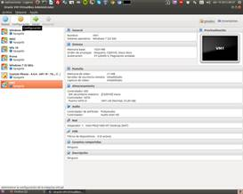
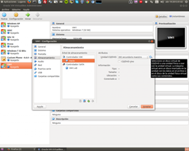
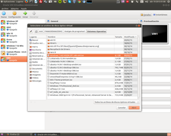
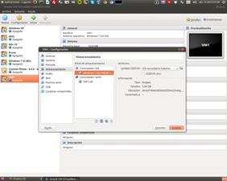
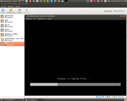
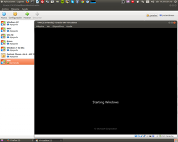
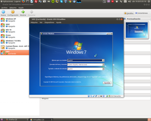

Instalacion de un Sistema Operativo en una maquina virtual
Cuentas con herramientas como Virtual Box, un gestor de máquinas virtuales. Su función es simular todos los elementos de un PC básico, incluyendo CPU, memoria, tarjeta de vídeo y de sonido, Internet y disco duro, entre otros.
Las ventajas que puedes trastear con la máquina virtual e instalar cualquier software sin miedo porque a nuestro ordenador no le pasará nada.
A continuación te explicamos todos los pasos a seguir para instalar Linux en Virtual Box sin afectar a tu sistema operativo actual y consiguiendo la mejor integración posible entre los dos sistemas, el real y el virtual:
Paso 1 - Descargar el instalador de Virtual Box
Asumiendo que vas a probar Linux por primera vez, necesitas instalar Virtual Box en tu ordenador, usando la versión Mac Os X o para Windows.

Paso 2 - Descargar una imagen ISO del disco de instalación de Ubuntu
En este caso usaremos laimagen por defecto de Ubuntu, aunque puedes usar cualquier imagen, tanto de CD como de DVD, ya sea de OpenSUSE, Fedora, Debian, Mandriva u otras.

Paso 3 - Crear una nueva máquina virtual
En primer lugar necesitas crear una máquina virtual. Virtual Box permite crearla para un sistema operativo concreto. Sólo hay que escribir un nombre, por ejemplo Ubuntu Softonic, escoger Linux como sistema operativo y Ubuntu como versión.
Especial atención hay que dedicarle a la memoria RAM. De ello depende que tu máquina virtual funcione mejor o peor y que el ordenador lo aguante: no hay que olvidar que haremos funcionar al mismo tiempo dos sistemas operativos en un solo equipo. Lo ideal es dedicar la mitad de la RAM, es decir, 512 MB si tu PC dispone de 1GB.Y en cuanto al disco duro, depende también de cuánto espacio tienes libre y cuánto espacio estás dispuesto a sacrificar para Linux. Lo ideal es de 8 a 10 GB como mínimo. Así podrás instalar juegos y programas sin problemas. Marcando la opción de disco dinámico, irás ocupando esos gigabytes poco a poco en lugar de hacerlo de golpe con la opción de tamaño fijo.

Ahora ya tienes una máquina virtual para trastear con ella cuanto quieras. Pero antes de instalar Ubuntu en ella, será mejor que eches un vistazo a las opciones de configuración.

Escogemos la opción seleccionar un archivo de disco virtual y buscamos el archivo ISO que contiene el DVD de instalación del sistema operativo virtual (en este caso Windows 7)
Hacemos Click en aceptar y encendemos la máquina virtual haciendo doble click sobre ella


Seleccionamos el idioma y adelante
